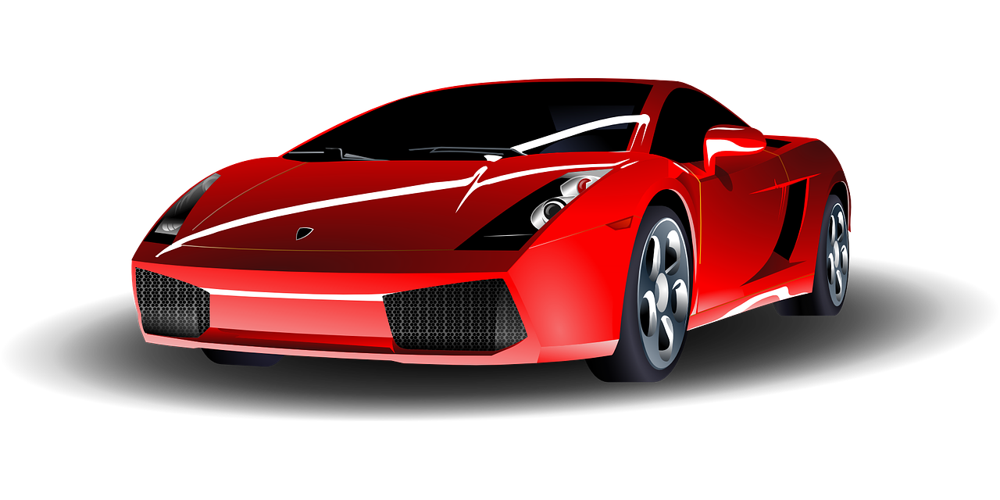
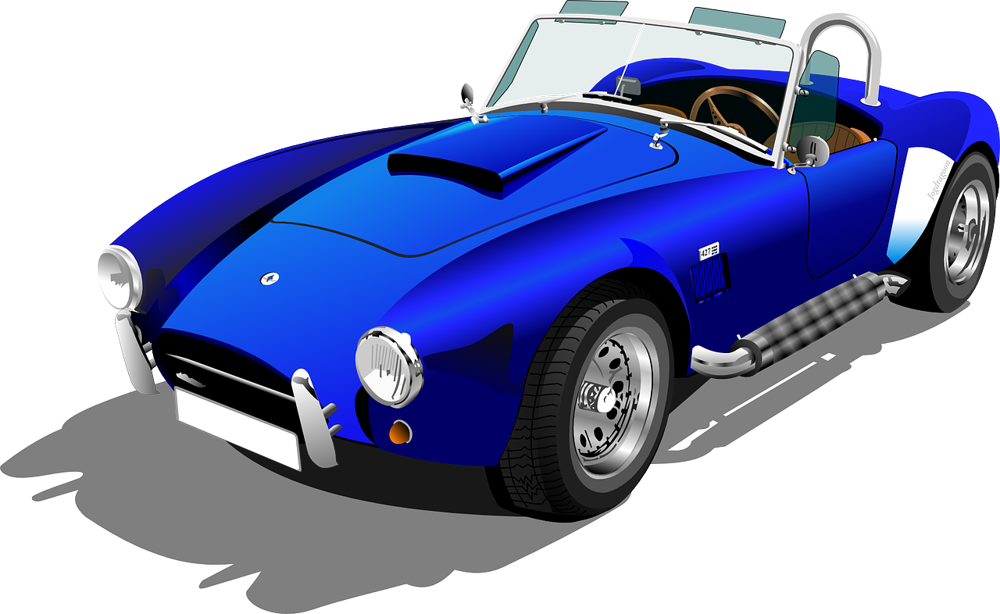

Lesson 100
-er/-est

ufliteracy.org


Lesson 100
-er/-est


See UFLI Foundations lesson plan Step 1 for phonemic awareness activity.


See UFLI Foundations lesson plan Step 2 for student phoneme responses.


s
kn
wr
mb
ou
ow
oi
oy
ea
a
aw
au
augh
ew
ui
ue
oo
u
ie
igh
oa


See UFLI Foundations lesson plan Step 3 for auditory drill activity.

No slides needed for auditory drill.


See UFLI Foundations lesson plan Step 4 for blending drill word chain and grid.
Visit ufliteracy.org to access the Blending Board app.


See UFLI Foundations lesson plan Step 5 for recommended teacher language and activities to introduce the new concept.
Adjectives
give us more information about people, places, and things


I see a red car.
I see a blue car.
Morphemes
word parts that change a word’s meaning
Suffix
morpheme added to the end of a word
-er
-est
-er
more than
Martin is taller than Jay.
-est
the most
Ty is the fastest person on the team.

highest

smallest
sharper
softer
tallest
shortest
longest
newer
hardest
shorter

See UFLI Foundations lesson plan Step 5 for words to spell.
Handwriting paper to model spelling.

See UFLI Foundations lesson plan Step 5 for words to spell.
Handwriting paper for guided spelling practice.


Insert brief reinforcement activity and/or transition to next part of reading block.

Lesson 100
-er/-est

New Concept Review

See UFLI Foundations lesson plan Step 5 for recommended teacher language and activities to review the new concept.
Suffix
morpheme added to the end of a word
-er
-est
-er
more than
Martin is taller than Jay.
-est
the most
Ty is the fastest person on the team.
higher
highest
newer
newest


See UFLI Foundations lesson plan Step 6 for word work activity.
Visit ufliteracy.org to access the Word Work Mat apps.


See UFLI Foundations lesson plan Step 7 for irregular word activities.
The white rectangle under each word may be used in editing mode. Cover the heart and square icons then reveal them one at a time during instruction.

See UFLI Foundations manual for more information about reviewing irregular words.

about
Lesson 98+
A represents the /ə/ or the /ŭ/ sound, depending on stress.
The white rectangle under the word may be used in editing mode. Cover the heart and square icons then reveal them one at a time during instruction.
answer
Lesson 99+
W is silent.
The white rectangle under the word may be used in editing mode. Cover the heart and square icons then reveal them one at a time during instruction.
Handwriting paper for irregular word spelling practice. Use as needed.
See UFLI Foundations manual for more information about reviewing irregular words.


See UFLI Foundations lesson plan Step 8 for connected text activities.
My bunny has the softest fur!
At this rate, we could walk there faster!
Jayden is taller than Josh but Eve is the tallest.
See UFLI Foundations lesson plan Step 8 for sentences to write.

The UFLI Foundations decodable text is provided here. See UFLI Foundations decodable text guide for additional text options.
Growth Spurt
Akeem woke up one morning feeling quite strange. His arms stretched longer than they ever have before. When he
stood up, he hit his head on a shelf! He felt like he had a brand new body.
When Akeem got dressed, none of his clothes fit. His arms were longer than his shirt sleeves. His shoes were smaller than his feet. Even his longest pants were now too short. What was he going to do?
Akeem walked into the kitchen with his too big body in his too small outfit. “Wow,” grandma exclaimed, “you had a growth spurt! You got taller overnight! Now you may be the tallest kid in your class!”
Akeem’s big brother got up from the table and stood next to him. The top of Akeem’s head only reached his brother’s elbows. “Well, you’re still shorter than me,” he said with a grin.

Insert brief reinforcement activity and/or transition to next part of reading block.